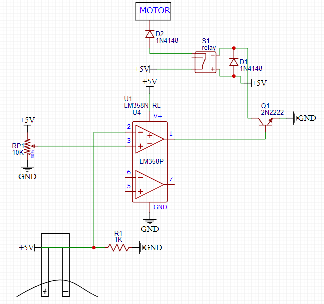

What is this project about?
This project’s goal is to build a machine that will measure soil moisture
and turn on auto watering using an lm358 operational amplifier.
What was used for the project?
In order to accomplish the project I needed to know how to:
- use voltage separator
- assemble a pump
- work LM358 logic elements
For that I used:
- LM358
- Resistors
- Transistor
- Relay
- Potentiometer
- Diode
What was the process to achieve my goal?
In this project, I decided not to use Arduino,
but measure soil moisture using an operational amplifier such as a comparator.
I sent the signal from the soil to the first input through a voltage separator
and to the second input from a potentiometer.
Then I learned how the adder works and collected them from logical elements. See below:
if the soil voltage is less than the potentiometer voltage, the relay turns on to start the engine.

Аnd finally, I assembled a pump from a syringe and a 6v motor.

Project Result